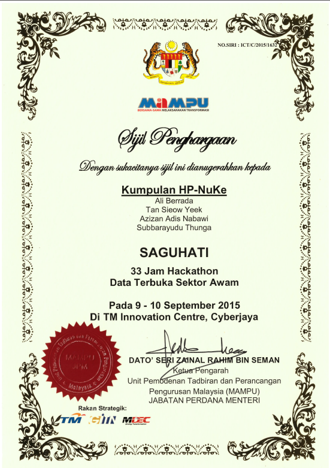

Awards ...
- Consolation award of 33 hours Hackathon based on government Open Data by MAMPU, 9th-10th Sep 2015 Recognition
- Finalist award of the HP New Style of IT Challenge, innovation title: "Enterprise Knowledge Sharing System (EKSS)" and "Easy Big-Data Discovery System", 7th Oct 2013 Recognition
- Cloudera Certified Developer for Apache Hadoop (CCDH), Exam CCD-410 (CDH4), 13rd Feb 2013
- Ministry of Science, Technology and Innovation (MOSTI) ScienceFund award, project title: "Multi-Feature Optimization Modelling for Object Recognition in Conceptualizing Domain Independent Images", Nov 2011
- Cradle Investment Programme (CIP) award, project title: "Robotic Eye Inside Pipe", May 2009
- Cradle Investment Programme (CIP) award, project title: "Cameraless Vision System (Wafer)", Sep 2008
- Technopreneur Pre-Seed Fund (TPF) award, project title: "Cameraless Vision System (PCB)", May 2008
- Malaysia Venture Captital (MAVCAP) award, project title: "Eliminate Human Eye Inspection Process", Apr 2007
- Gold Medal award of the IPTA Expo 2005, PWTC, 2nd October 2005
- "Saintis Cemerlang 2005" awarded by Ministry of Higher Education, 23rd August 2005
- ITEX Bronze Medal award of the 16th International Invention Innovation Industrial Design & Technology Exhibition 2005 (ITEX 2005), Kuala Lumpur, Malaysia, 19th - 21st May 2005
- Gold medal award of the Invention Exhibition of New Invention, Techniques and Products 2005, Geneva, 8th April 2005
- Others:
- Certificate of merit for Chinese Chess Competition University of Malaya 1999
- Certificate of merit for National Physic Competition Pre-University level 1998
Award & Training Certificates ...
|
33 Hours Hackathon by MAMPU, 9th-10th Sep 2015
|
Consolation award of 33 Hours Hackathon, 9th-10th Sep 2015
 |
|
Big Data Analytics - Data Science, 12nd - 14th Aug 2015
|
Business Analytic Training, Apr 2015
|
|
Tableau Fundamental Classroom Training, 15th-Aug 2014
|
Tableau Advance Classroom Training, 22nd-Aug 2014
|
|
CSM + Agile Tools & Techniques Certified SCRUM Master Workshop, 10th - 12th Jan 2014 |
Certified ScrumMaster @ ScrumAlliance, 11th Jan 2014 |
|
Project Management Professional (PMP), 25th - 29th Nov 2013
|
Introduction to Using SAS Enterprise Miner, 25th Nov 2013
|
|
IDOL Connector Advanced, 6th Nov 2013
|
Explore Cloud, 4th Nov 2013
|
|
Cloudera Certified Developer for Apache Hadoop (CCDH) Exam CCD-410 (CDH4), 13rd Feb 2013 |
MyCareer Development Program : Senior Talent - Offsite Session 5th - 7th Octbober 2014 |
|
QlikView 11 Designer 19th Feb 2013 |
QlikView 11 Developer 22nd Feb 2013 |
|
Autonomy Software - IDOL Server Essential 10 21st - 24th October 2012 |
Cloudera Developer Training for Apache Hadoop 17th - 20th December 2012 |
|
Fundamentals of Computer Vision With Medical and Video Application
10th - 11th September 2012 |
Presentation Alive, 04th - 05th July 2012, Kuala Lumpur
|
|
Gold medal award of the Invention Exhibition of New Invention, Techniques and Products 2005,
Geneva, 8th April 2005 |
ITEX Bronze Medal award of the 16th International Invention Innovation Industrial Design & Technology Exhibition 2005 (ITEX 2005), Kuala Lumpur, Malaysia, 19th - 21st May 2005.
|
|
Saintis Cemerlang 2005
awarded by Ministry of Higher Education, 23rd August 2005 |
Represented University Of Malaya in the ACM International Collegiate Programming Contest, Asia Region Contest held in Hong Kong in October 2000.
|
|
Completion of 3 days MyTriz Workshop
Workshop organized by The Malaysia TRIZ Innovation Association together with The International TRIZ Association (MATRIZ) |
2 days Machine Learning Workshop |
|
Performance Unleashed Speaker profile: http://pqre.mimos.my/perfunleashedconf/speaker.php |
Training: Advance Video Analytic and Emerging Video Surveillance |
|
Introduction Graph Theory Course |
UML Design Expert - A Thorough Introduction for Analysis and Design (Phase 2) |
|
Business Plan Clinic by CRADLE Investment Program |
Step Up Program For Entrepreneurs |
|
Upgrading Web Development Skill From ASP to Microsoft ASP.NET |
Getting Start With .NET |
|
Certificate of Completion For "Introduction to UML" |
Training Certificate For "Programming With C#" |
|
Certificate Of Participation For "Architecting Entreprise Software" |
Microsoft Certificate Of Achievement For Advance Windows Forms Technologies Workshop For Microsoft Visual Studio 2005 |
|
Participated in MSC-Technopreneur Development Seminar & Workshop, 31st May 2004 |
Participated in The IBM Industrial Training Program |